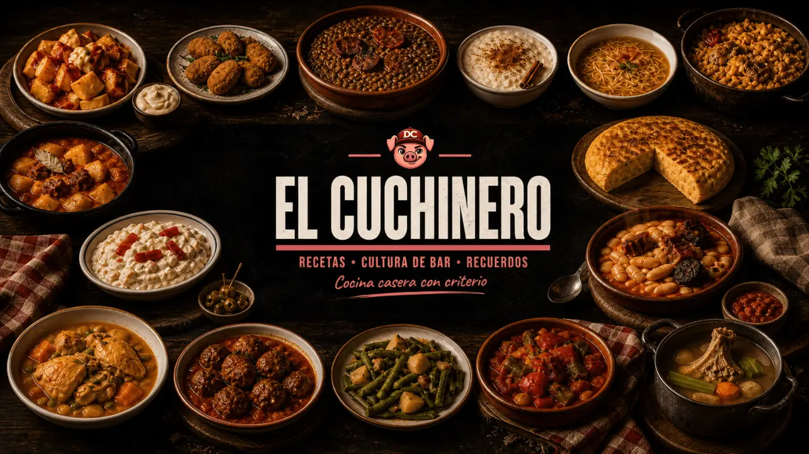

Por qué pasa esto
Recetas que funcionan
El error invisible que arruina el plato, explicado con su causa exacta. Sin trucos de feria: física de cocina de la de siempre.
Descubre el errorCocina casera española explicada de verdad. Cocina de cuchara, recetas de bar y tradición asturiana. Con criterio y sin atajos.

+110.000 personas ya cocinan con criterio
No falla aquí. Falla antes.
Las lentejas no quedan aguadas por el chorizo. Quedan aguadas porque el sofrito no redujo lo suficiente. Todo tiene un porqué. Este es el método para encontrarlo.
La ensaladilla de casa no sabe como la del bar. La mayonesa se corta. El pescaíto chupa aceite. Eso no es mala suerte: es un dato.
Temperatura, orden, tiempo, reposo. El error casi nunca está donde lo ves. Está dos pasos antes, y tiene explicación física.
Cuando entiendes el mecanismo, dejas de copiar recetas. Aquí se separa quien cocina de memoria de quien cocina con criterio.
El error invisible que arruina el plato, explicado con su causa exacta. Sin trucos de feria: física de cocina de la de siempre.
Descubre el errorEse sabor de barra que en casa nunca sale. La ensaladilla, el pescaíto, las bravas. Aquí sale. Y sabes por qué sale.
Ver la causaFabada, pote, callos, croquetas. Cocina de cuchara y tradición: la que se hace despacio y se defiende sola en la mesa.
Entiende por quéLas marcas que crecieron contigo y la comida de los 80 y 90: la que sabía a verano, a kiosco y a bocadillo en la playa.
Dos polvos de cacao, dos Españas en el desayuno. La historia de cómo una lata amarilla se metió en tu cocina y no salió.
Tortilla envuelta en papel de plata, arena en el filete empanado y la nevera de camping. Nada volvió a saber igual. Hay motivo.
Revive el momento →
Trucos, errores y los detalles que separan un plato bien hecho de uno corriente. Fabada, pote, tortilla de patata, ensaladilla rusa y la razón física detrás de cada paso.
Todo está en el canal de El Cuchinero en YouTube. Si te interesa entender la cocina, no solo copiarla, llegas a buen sitio.
Una colaboración, una marca, una propuesta de medios. O una receta que se te resiste. Escríbeme y te respondo.